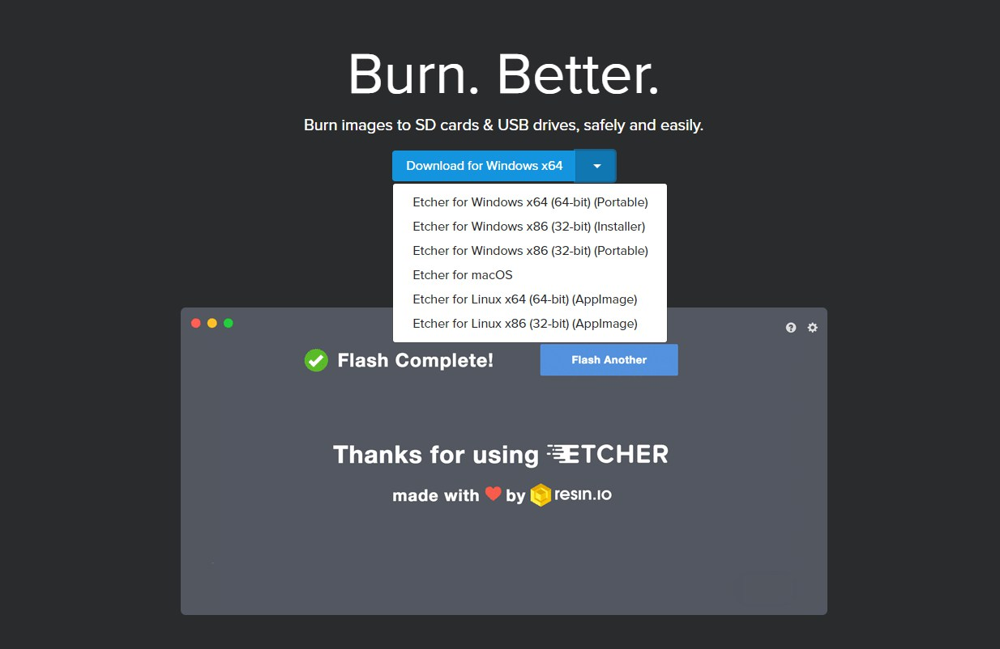

Wstępne przygotowania do samodzielnego wykonania Smart Mirror
Zanim jeszcze przystąpimy do jakichkolwiek działań związanych z konfiguracją urządzenia, systemu i samego oprogramowania SmartMirror.pl koniecznym będzie przygotowanie podstawowych komponentów niezbędnych do uruchomienia urządzenia Raspberry Pi:
- Raspberry Pi - model nie ma dużego znaczenia (my bazowaliśmy na Rasp Pi model A), jednak w przypadku zakupu lepiej jest szukać nowszych modeli z większą mocą i wbudowanym modułem WiFi
- Monitor - nawet najprostsze modele spełnią swoją rolę, ale preferowanym jest monitor ze złączem HDMI oraz USB. W przeciwnym wypadku będzie trzeba posiłkować się przejściówkami
- Karta pamięci - minimalna pojemność to 8GB. Preferowane są wyższe klasy prędkości, ale system będzie działać również na tych niższych.
- Kabel HDMI do przesłania obrazu oraz kabel Micro USB do zasilenia "malinki"
- Czytnik kart pamięci podłączony do komputera - będzie niezbędny aby zainstalować system na karcie pamięci
Powyższe komponenty są absolutnym minimum potrzebnym do rozpoczęcia działania z urządzeniem Raspberry Pi. Dodatkowymi produktami, które przydadzą się, ale nie będą na stałe używane z urządzeniem Raspberry Pi to: kabel RJ-45 i mysz USB, których role bardziej szczegółowo opisane są w poniższych częściach poradnika.
Pobranie, instalacja oraz wstępna konfiguracja systemu Raspbian.
Poradnik został podzielony na kilka części, aby całość była bardziej przejrzysta i łatwiejsza do zrozumienia.
Pobranie obrazu i instalacja na karcie pamięci.
Potrzebne będą:
- Karta pamięci (co najmniej 8GB)
- Komputer z dostępem do Internetu i czytnikiem kart
- System operacyjny Raspbian
- Oprogramowanie do instalacji Raspbiana na karcie pamięci - Etcher
- Pobieramy aktualną wersję Raspbiana ze strony: https://www.raspberrypi.org/downloads/raspbian/ (w chwili publikacji był to Raspbian Stretch)
- Pobieramy Etcher ze strony: https://etcher.io/. Spośród wielu wersji wybieramy wersję Portable, ze względu na to, że nie wymaga instalacji. Architekturę użytkownik dobiera odpowiednio do swojego systemu operacyjnego Windows/Linux. 
- Po rozpakowaniu pliku *.zip z obrazem systemu wszystkie potrzebne do instalacje na karcie pamięci programy powinny prezentować się tak jak na zdjęciu.
- Uruchamiamy Etcher, pojawi się następujące okno.
- Klikamy „Select image” i wybieramy obraz systemu.
- Upewniamy się, że została wybrana odpowiednia karta pamięci klikając „Change”. Jest to istotne, ponieważ po kliknięciu „Flash!” karta zostanie wyczyszczona.
- Jeśli wszystko jest w porządku, klikamy „Flash!”, pozwalamy na wprowadzanie zmian na tym urządzeniu i czekamy, aż obraz zostanie zainstalowany na karcie pamięci.
- Gdy instalacja zostanie zakończona powodzeniem, Etcher wyświetli odpowiedni komunikat.


Po wykonaniu tych kroków mamy zainstalowany system Raspbian na naszej karcie pamięci.